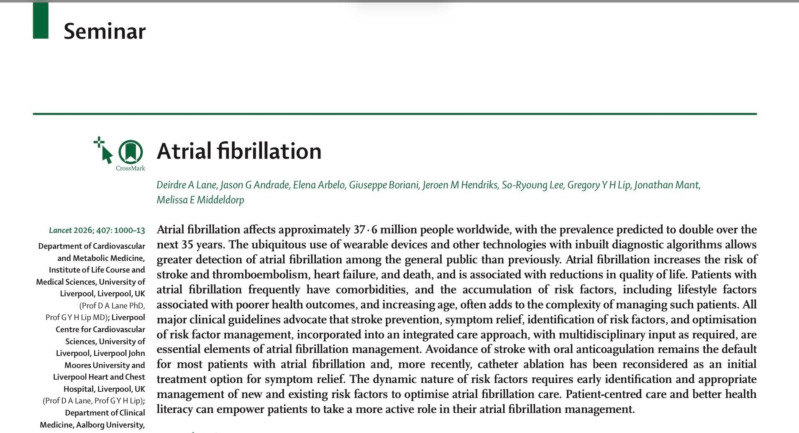
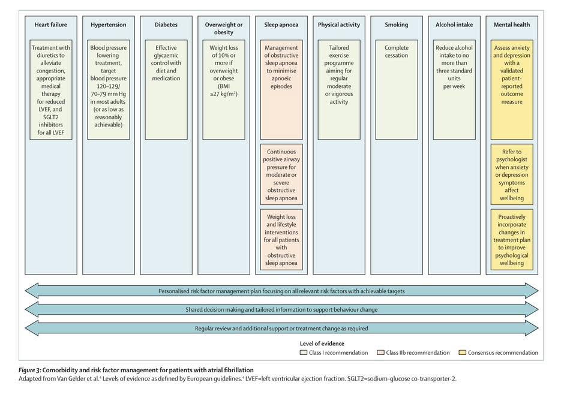
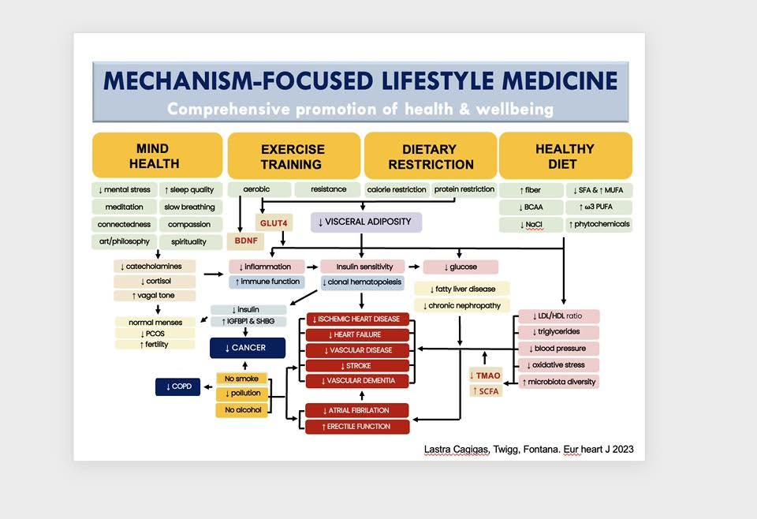

1 in 3 people will develop atrial fibrillation in their lifetime.
Lifestyle factors play a major role in preventing it.
Luigi Fontana's overview framing AF as the end result of cumulative cardiometabolic stress: hypertension, visceral fat, inflammation, dyslipidemia, poor sleep and alcohol remodel the thin atrial wall. It also notes wearable ECG devices are changing AF detection.
1 in 3 people will develop atrial fibrillation in their lifetime.
Lifestyle factors play a major role in preventing it.
Atrial fibrillation (AF) is no longer a rare arrhythmia of ageing. It is becoming a population-level phenomenon.
One in three people will develop atrial fibrillation in their lifetime, but this isn’t random.
AF is not simply an electrical disorder of the atria.
It is the final electrophysiological expression of cumulative cardiometabolic stress leading to increased stroke and heart failure risk.Your left atrium is just a millimeter thin, and chronic lifestyle stressors—hypertension, visceral fat, inflammation, dyslipidemia, metabolic syndrome, poor sleep, alcohol—trigger atrial remodeling.
Over time, that thin wall becomes dilated, stiff, fibrotic—what we call an atriopathy. And then? It sets the stage for AF, a powerful risk factor for stroke and heart failure.
Mechanistically, several processes converge:
- Atrial structural remodeling driven by hypertension, obesity, and inflammation
- Fibrosis and atrial dilation from pressure and volume overload
- Autonomic imbalance associated with metabolic dysfunction and sleep apnea
- Electrical remodeling that shortens atrial refractory periods and promotes re-entry circuits
In other words, AF is often the downstream consequence of decades of lifestyle and metabolic exposures.
Another major shift is occurring in detection.
The rapid diffusion of wearable technologies with embedded ECG or rhythm-analysis algorithms is transforming the epidemiology of AF. Millions of individuals can now detect asymptomatic or intermittent arrhythmias that previously went unnoticed.
This has two profound implications:
1️⃣ Earlier diagnosis of subclinical AF
2️⃣ A new challenge in determining the clinical significance of device-detected arrhythmiasAs cardiology moves forward, the paradigm is evolving from reactive treatment to integrated care that combines:
- early detection
- risk-factor modification is vital
- patient engagement
- evidence-based therapies
Ultimately, the most powerful strategy may be simple:
Treat the substrate, not just the rhythm.
Prevention isn’t optional. It’s the core therapy.
AF is a culmination, not a coincidence.
Because preventing atrial remodeling through lifestyle and cardiometabolic health may be the most effective antiarrhythmic strategy we have.
#Cardiology #LifestyleMedicine #Prevention #AtrialFibrillation #Longevity




Luigi Fontana frames atrial fibrillation as a risk-factor-driven disease. A JAMA Cardiology randomized trial found a structured physician-led lifestyle program after ablation produced better outcomes than usual care.

Louis shares a summary of the 2025 AHA/ACC blood pressure guideline in Circulation, noting how common elevated blood pressure is in US adults (about 84% at ages 75-80), and that it drives heart disease, stroke, dementia and kidney disease. It emphasizes lifestyle prevention.

Louis shares a JACC piece arguing that cognitive impairment and CVD share the same biological drivers: chronic inflammation, insulin resistance, hypertension, dyslipidemia, oxidative stress, endothelial dysfunction and atherosclerosis. It suggests lifestyle strategies such as diet, exercise, stress reduction and sleep can address both.

Louis agrees with a critique of influencers who treat VO2 max as the key heart-health metric. VO2 max is oxygen consumption divided by body weight, so it can rise through weight loss without real fitness gain. He also notes AHA and ACC statements recognizing high-volume intense exercise can have downsides.

Louis says replacing saturated with unsaturated fat is believed to be a main reason heart deaths dropped in Finland in the 1970s and 1980s. The shared cardiologist's post describes North Karelia's 700 per 100,000 CVD death rate in 1972, with 24% of calories from saturated fat, and a 20% cholesterol drop with coronary deaths in working-age men falling 82%.

A shared graphic outlines a simple starting plan for new atrial fibrillation: rate control for stability, rhythm control for symptoms, and anticoagulation to prevent stroke. Louis added only hashtags.